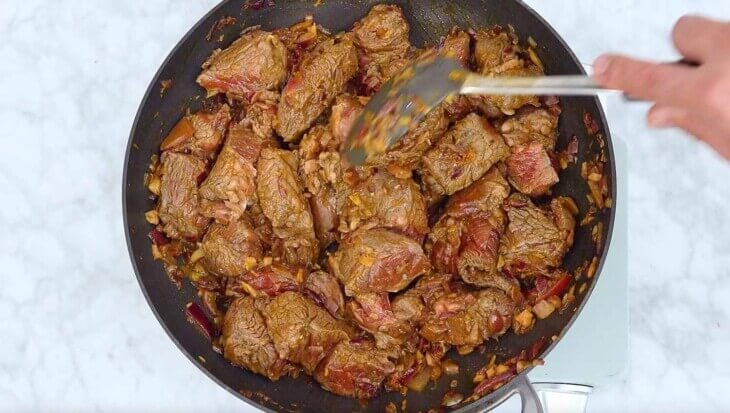
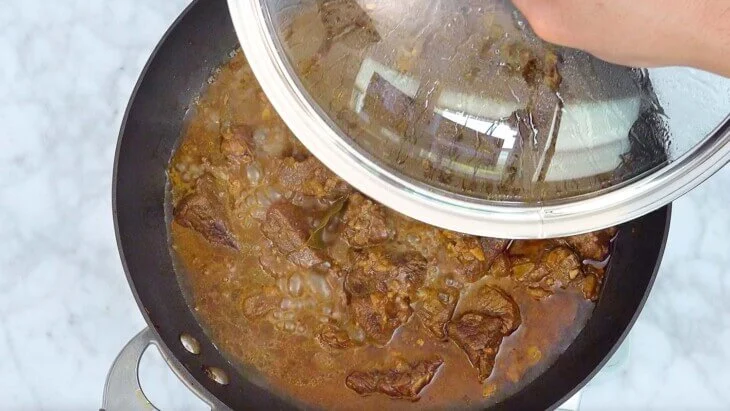
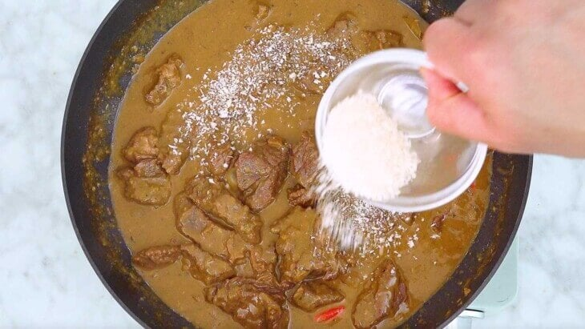

1. Combine the beef and soy sauce in a bowl. Mix well. Marinate for 30 minutes. (3 lbs beef chuck, 1/4 cup soy sauce)
2. Melt the margarine in a pan. Add the annatto powder and stir. (1 tsp annatto powder, 3 tbsp margarine)

3. Add the garlic and sauté until it starts to brown. Add the onion and continue to sauté until it becomes soft. (8 cloves garlic, 3 pcs red onions)
4. Add the marinated beef. Sauté until the outer part turns light brown. Make sure to stir frequently while cooking to ensure that all sides are cooked evenly.
5. Add the Worcestershire sauce and pickle relish. Cook for 2 minutes. (3 tbsp Worcestershire sauce, 3 tbsp sweet pickle relish)

6. Pour in the water and let it boil. (4 cups water)
7. Add the beef powder. Stir and cover the pan. Simmer until the beef becomes tender. (1 tbsp beef powder)
8. Add the liver spread, peanut butter (optional), cheese, and chili peppers. Stir until the sauce smoothens. The sauce will thicken partially after a few minutes. (2 tbsp peanut butter, 1/4 cup cheddar cheese, 3 pcs Thai chili pepper, 3 oz liver spread)
9. Continue cooking on low heat for 5 minutes. Make sure to stir occasionally to prevent the sauce and meat from sticking to the bottom of the pan.

10. *OPTIONAL* Add the breadcrumbs. This ingredient will make the sauce thicker. (2 tbsp breadcrumbs)
11. Season with salt and ground black pepper. (ground black pepper to taste, salt to taste)